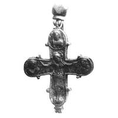
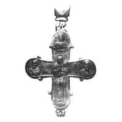

Catalog › CE-0632 · KOR2003-II.1.1.11
Encolpion mare cu inel de agățare fațetat, Răstignire și arhanghel pe față, Odighitria și apostoli pe revers
sec. XII (1101–1200) · Vințentovka, ținutul Lipoveț, gubernia Kiev (azi regiunea Vinnița), Ucraina · Muzeul de Istorie de Stat, Moscova (GIM), inv. 25782, оп. 1721В/2
double-sided reliquary cross (enkolpion), altul; c. XII (1101–1200); found at Vințentovka, ținutul Lipoveț, gubernia Kiev (azi regiunea Vinnița), Ucraina; kept at Muzeul de Istorie de Stat, Moscova (GIM).




Identificare
- Categorie
- Encolpion bivalv (relicvar)
- Material
- Altul
- Tehnică
- Turnare în relief
- Stare
- Întreagă
- Dimensiuni
- Î 110 × L 97 mm
Iconografie
- Avers
- Sf. Arhanghel Mihail
- Descriere avers
- Valvă de față: în centru imaginea în relief a Răstignirii; la trei capete, busturi în relief ale Arhanghelului Mihail și ale adstanților.
- Revers
- Maica Domnului cu Pruncul; Sf. Petru
- Descriere revers
- Valvă de revers: în centru figura în relief a Maicii Domnului Odighitria; la trei capete, busturi în relief, frontale, ale Arhanghelului Gavriil și ale apostolilor Petru și Pavel.
- Inscripții
- IC XC (față); NI K[A] (revers, cu titlă)
- Limba
- Greacă
Datare și atribuire
- Datare
- sec. XII (1101–1200)
- Centru
- Necunoscut
- Tipologie
- Korzukhina–Peskova 2003, tip II 1 1
Descoperire
- Localitate
- Vințentovka
- Regiune
- ținutul Lipoveț, gubernia Kiev (azi regiunea Vinnița)
- Țară
- Ucraina
- Context
- Necunoscut
Păstrare și referințe
- Colecție
- Muzeul de Istorie de Stat, Moscova (GIM)
- Nr. inventar
- 25782, оп. 1721В/2
- Bibliografie
- G. F. Korzukhina, A. A. Peskova, Древнерусские энколпионы. Нагрудные кресты-реликварии XI–XIII вв., Sankt-Petersburg, 2003 [Korzukhina–Peskova 2003], p. 62, cat. nr. II 1 1/11, reprodusă la Табл. 16 (planșe, p. 258). Bibliografie citată în sursă: Леопардов 1891, табл. IV, VI, 6; Полонская 1913, табл. XXIV, 19; Гутова 1993, в т.ч. фото на с. 170–171; Корзухина, архив ф. 77, д. 15, л. 12.
- Figura
- Табл. 16
- Planșe
- Korzukhina–Peskova 2003, Табл. 16 (planșă fără paginație proprie în PDF; p. 258 tipărită)
- Observații
- Datare după Peskova: sec. XII. Metal „colorat” (цветной металл); capete rotunjite; inel de agățare mai târziu, în formă de mărgea fațetată cu 14 fețe, aplatizată. Cele două balamale de sus (păstrate) sunt lipite, nu turnate odată cu crucea. Pe interior adâncituri slab urmărite ce repetă reliefurile exterioare; urme de metal scurs. Reliefuri înalte, detalii clare; medalioanele și marginea sunt conturate cu o linie falsă răsucită ce imită sârma filigranată. Inscripții turnate, adâncite. Coordonate: nu sunt date în sursă.
Citare: Corpus Encolpiorum, CE-0632, Encolpion mare cu inel de agățare fațetat, Răstignire și arhanghel pe față, Odighitria și apostoli pe revers, --root/piese/KOR2003-II.1.1.11/ (accesat 2026-10-20).